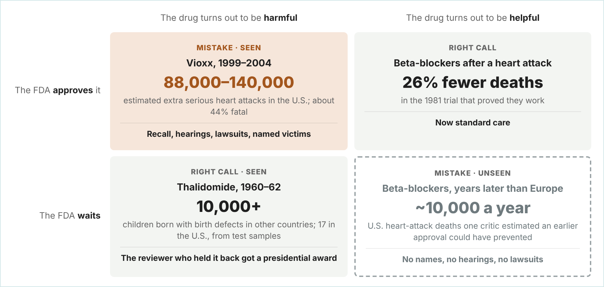
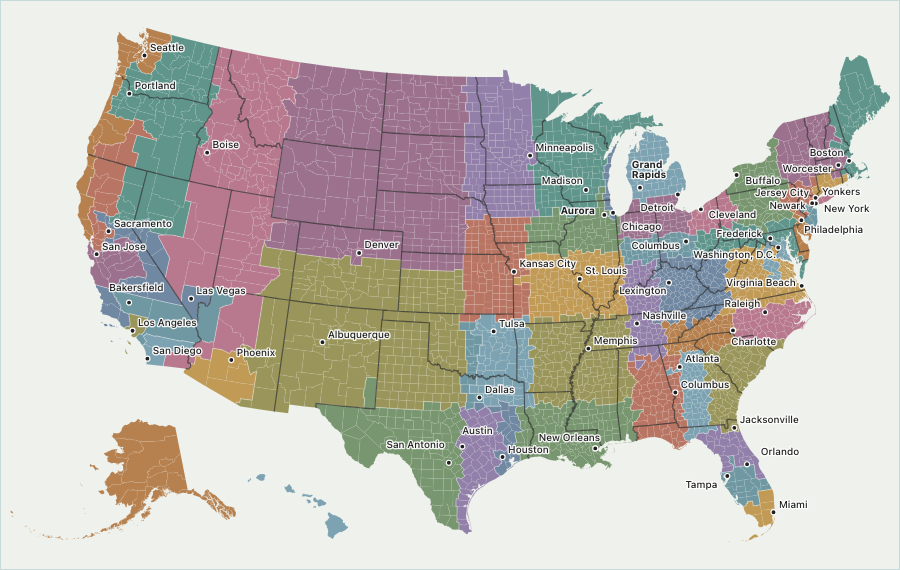

Featured
Measurement
How much of America holds 40% of its people?

Explore by theme
Perspective
What perspective am I missing?

Is London north of Vancouver, Calgary, and Toronto?
Time
Is it a difference in time, or in how we label it?

Which country has the most time zones?
Scale
How big is the difference, really?

How big is Africa... really?
Measurement
What does this measurement leave out?

How can the same country look almost empty, and unbelievably crowded?
Distribution
How is it actually distributed?

Can you see half the Earth and almost no land?
Statistics
What does this number really support?

What’s the average income at this BBQ?
Probability
What really determines these odds?

How many people does it take before a shared birthday is more likely than not?
Optimization
What is the actual goal?

Can two bowlers knock down the same 50 pins and finish 70 points apart?
Systems
What else changes when this changes?

Can a new road make traffic worse?
Newest

What would America look like if every state had the same population?
Fifty regions. Roughly equal populations. Radically different shapes.
Can you see half the Earth and almost no land?
Turn a globe so New Zealand faces you. The half you see is about 89% ocean.
How can the same country look almost empty, and unbelievably crowded?
Same counties, same population. Only the density cutoff changes.
Why Hanten?
反転 (hanten) is a Japanese word meaning reversal, inversion, or turning something over.
That idea is at the heart of Hanten: look again. Change the perspective, scale, measure, or frame, and something familiar can reveal a very different story.
Understanding is discovered, not delivered.